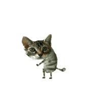
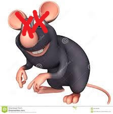

fernan se las arregla para traer al gato bailon a la sala en donde está la rata, inmediatamente ocurre una epica batalla a muerte entre el gato y la rata, pero la rata perece y el gato sale victorioso


fernan: "muy bien y todo, pero aún no encuentro a curly, voy a seguir buscando, supongo que este gato se ganó su estadía de hoy"